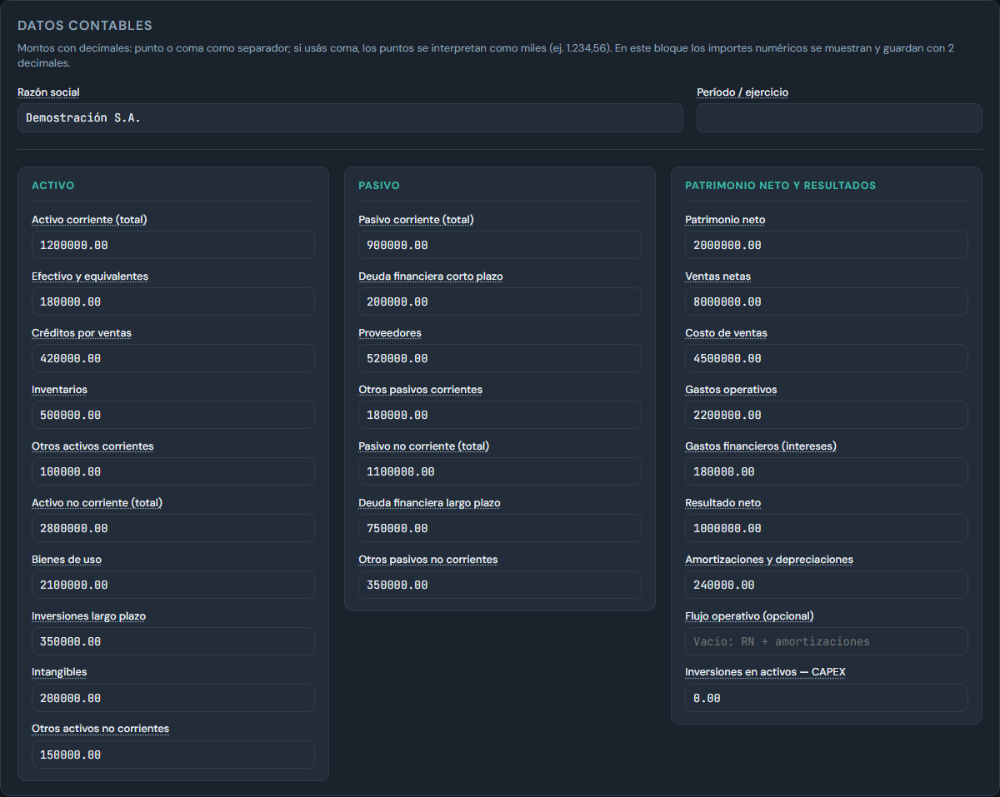
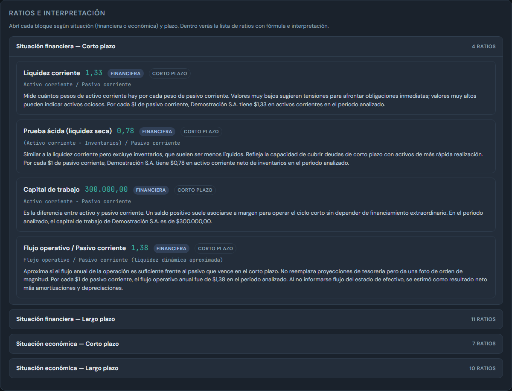
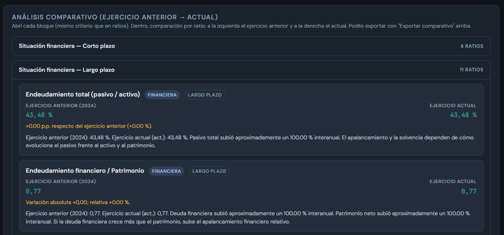
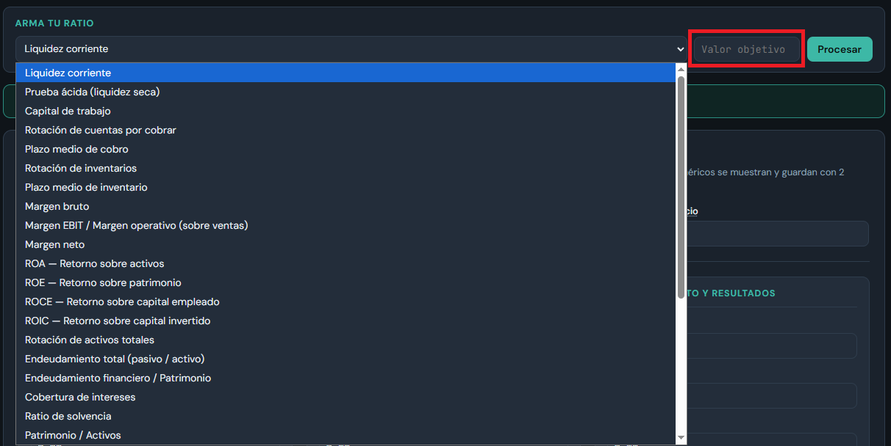

Guía general para comprender el funcionamiento de la herramienta
Ingresá los datos de tu balance en el formulario, o importá un Excel con los conceptos necesarios para alimentar el cálculo de los ratios.

Los ratios se agrupan en cuatro bloques: situación financiera y económica, en corto y largo plazo. En cada bloque se muestra fórmula, valor e interpretación para el período.

Si trabajás con un período anterior y uno actual, el sistema ofrece comparación ratio a ratio, con variación y comentario de posibles causas, exportable a Excel o PDF.

Si querés modificar el valor de un ratio y no sabés cuánto o cómo variar los datos contables, solo seleccioná el ratio a modificar y el valor objetivo del mismo. El sistema calculará las posibles modificaciones de las variables para llegar al objetivo deseado.

En la app podés importar o exportar datos y ratios, tanto en formato Excel como PDF.
Para solicitar un usuario, desde el inicio de sesión podés usar el enlace a WhatsApp (alta y consultas comerciales).